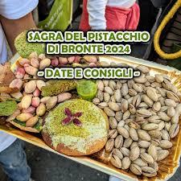
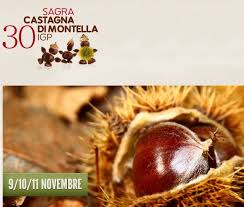
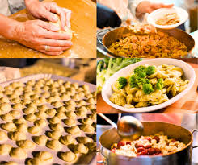
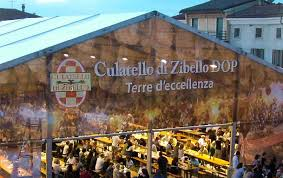
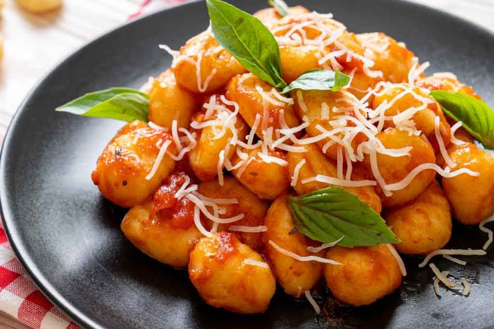
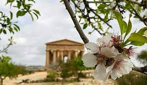

SAGRE ED EVENTI
Sagra del Pistacchio di Bronte (Sicilia)

Bronte (CT) Settembre / primi di ottobre
Un omaggio al celebre Pistacchio Verde di Bronte DOP: stand gastronomici, gelati, dolci, pesto e degustazioni.
L’evento si svolge su due weekend e include spettacoli folkloristici, concerti con bande locali, laboratori sensoriali
e una gigantesca torta al pistacchio da 500 kg condivisa in piazza. È una festa di colori, tradizioni e gusto nel cuore del territorio etneo.
Festa della Castagna di Montella IGP (Campania)
Montella (AV) Fine ottobre – inizio novembre
Celebrata da oltre 40 edizioni, questa festa promuove la Castagna di Montella IGP nei suoi prodotti classici:
castagne arrostite, dolci, liquori e piatti tipici dell’entroterra irpino. Con oltre 100 stand, cooking show,
spettacoli musicali e premi come il “Riccio d’Oro” dedicato a eccellenze locali.

Sagra della Orecchietta (Puglia)

Grottaglie (TA) Agosto
Un festival dedicato alla tipica pasta pugliese fatta a mano: le orecchiette.
Le massaie locali le preparano sul posto e le servono con condimenti classici come cime di rapa, sughi di carne o di pesce.
Atmosfera festosa, musica e piatti caldi sotto le stelle dell’estate. (basato su tradizione locale)
Fiera del Culatello di Zibello (Emilia-Romagna)
Fiera del Culatello di Zibello (Emilia-Romagna)
Evento leggendario dedicato al Culatello di Zibello DOP, considerato il "re dei salumi".
In piazza si possono degustare affettati di ogni tipo, abbinati a vini locali, pane caldo e musica dal vivo.
L’edizione si tiene da oltre trent’anni a ridosso del Po, in un clima di festa e gastronomia.

Sagra degli Gnocchi (Lazio)

Patrica (FR) Agosto
Un’occasione per gustare gnocchi fatti a mano conditi in mille modi: ragù, sughi, formaggi.
Questa festa estiva mescola piatti casalinghi, musica popolare e convivialità, offrendo un’esperienza autentica nel territorio di Patrica. (basato su tradizione locale)
Sagra del Mandorlo in Fiore (Agrigento, Sicilia)
Febbraio-Marzo
Non solo sapori: un festival culturale che celebra l’inizio della primavera con festa, folklore, musica internazionale e tra migliaia di mandorli in fiore.
Atmosfera magica tra tradizione e spettacolo.
